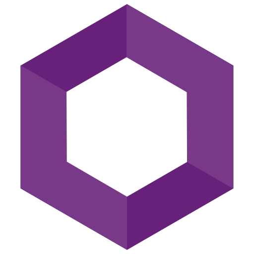
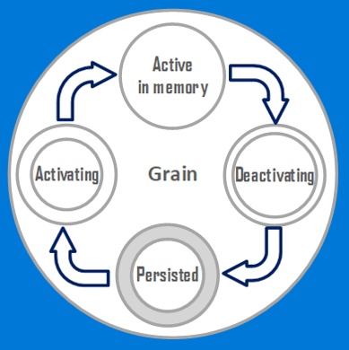
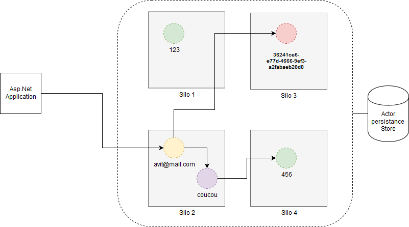
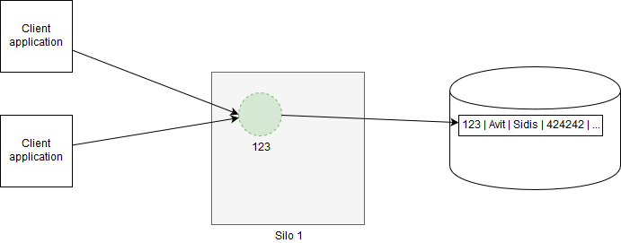

Microsoft Orleans
Avit Sidis - 2018

Introduction à MS Orleans
A straightforward approach to building distributed, high-scale applications in .NET
Les origines
- Créé par Microsoft Research en 2011
- Open source depuis 2015 (Github)
- Utilisé principalement par:
- Produits Microsoft (Azure)
- 343 Industries (Halo 4 et 5)
- Multiples projets IoT
Définitions de Microsoft Orleans
- C# distribué
- Exécution d'objets .net sur un cluster
- Boite à outils pour services 'cloud'
- Nativement scalable
- Pousse les bonnes pratiques cloud
- Facile a mettre en place
- Virtual Actor Model acteur virtuel distribué
- Adaptation du modèle acteur pour le cloud
- Acteurs qui existent éternellement
C'est un peu comme un objet ...
- Reçoit des messages
- Maintient un état
- Exécute du code en fonction du message reçu
C'est un peu comme un objet ...
... Mais pas complètement
- Complètement isolé les uns des autres
- Ne partage pas de mémoire
- Appels indirects au travers d'une mailbox
- Dépend d'un superviseur (hierarchie d'acteurs)
Que peut faire un acteur ?
- Créer d'autres acteurs
- Envoyer un message à un acteur
- Modifier son état
La philosophie 'Let it crash'
Le cas où l'acteur plante est géré de base :
Le superviseur reçoit un message.
- Stratégies possibles :
- Réinitialisation de l'acteur
- Arrêt d'autres acteurs
- Envoi d'un message d'erreur à son superviseur
- ...
Virtual Actor Model avec MS Orleans
Points faibles du modèle Acteur
- Framework Low Level
- Lifecycle géré par l'application
- Gestion des exceptions par l'application au travers de superviseurs
- Placement des acteurs défini par l'application
- Sous optimisation des ressources serveurs
- Nécessité d'avoir des experts en systèmes distribués
Virtual Actor Model
- L'instance d'acteur existe toujours (virtuellement)
- Activations créées à la demande
- Localisation transparente
Définition d'un grain
- Acteur existe toujours (au moins virtuellement)
- Activation sur le cluster à la demande
- Localisation transparente
- Chaque grain a un identifiant unique
- Ne retourne que des objets de type Task
Cycle de vie d'un grain

Grain Id
Id = clé unique (string, guid, long)

Stateless Worker Grain
Définition
- Pas d'identifiant unique
- Multiples instances dans un cluster/serveur
- Toujours exécuté localement
Stateless Worker grain
Cas d'utilisations
- Opérations fonctionnelles
- Opérations techniques
- Compression/Décompression
- (Dé)Chiffrement/hashage
- Routage
- ...
Timers
- Appel périodique d'une méthode
- Uniquement quand le grain est actif
- Appel comme si grain réentrant
- Période = temps après le retour du précédent appel
Reminders
- Timers persistants
- Délivrés comme un message
- Fréquence basse (1 minute)
Avit, montre-nous du code !
Accéder à un grain
var user = grainFactory.GetGrain<IUserProfile>(userEmail);
await user.UpdateAddress(newAddress);
Interface de grain
public interface IPlayerGrain : IGrainWithGuidKey
{
Task<IGameGrain> GetCurrentGame();
Task JoinGame(IGameGrain game);
Task LeaveGame(IGameGrain game);
}
Implémentation du grain
public class PlayerGrain : Grain, IPlayerGrain
{
private IGameGrain currentGame;
public Task<IGameGrain> GetCurrentGame() => Task.FromResult(currentGame);
public Task JoinGame(IGameGrain game)
{
currentGame = game;
var gameKey = game.GetPrimaryKey();
Console.WriteLine($"Player {GetPrimaryKey()} joined game {gameKey}");
return Task.CompletedTask;
}
public Task LeaveGame(IGameGrain game)
{
currentGame = null;
var gameKey = game.GetPrimaryKey();
Console.WriteLine($"Player {GetPrimaryKey()} left game {gameKey}");
return Task.CompletedTask;
}
}
Smart Cache

Smart Cache
Cas d'utilisation
- Cache de
- base de données
- web services
- ...
Registry
Cas d'utilisation
- Recherche
- Récupérer un grain sans sa clé
- Récupérer l'ensemble des grains d'un type
Aggregate
Cas d'utilisation
Dispatcher
Cas d'utilisation
- Messages envoyés par lot
- Decompression du message
- Déchiffrement
Pour quels cas est-ce intéressant d'utiliser Orleans ?
- Internet of Things
- Graphs sociaux
- Cache intelligente
- Statistiques Temps réel
Pour quels cas n'est il pas intéressant d'utiliser Orleans ?
Si des requêtes différentes activent des combinaisons de records différents dans une base de données
Conclusions
- Très facile à prendre en main
- Nativement scalable et robuste
- Architectures naturelles
- Mais pas applicable partout
Et après ?
- Observer
- Stream Grains et event sourcing
- Stockage/Persistance de grains
- Déploiement d'un cluster (consul, zookeeper, ...)
- ...
Conclusions
Autres Projets utilisant le modèle d'acteur virtuel